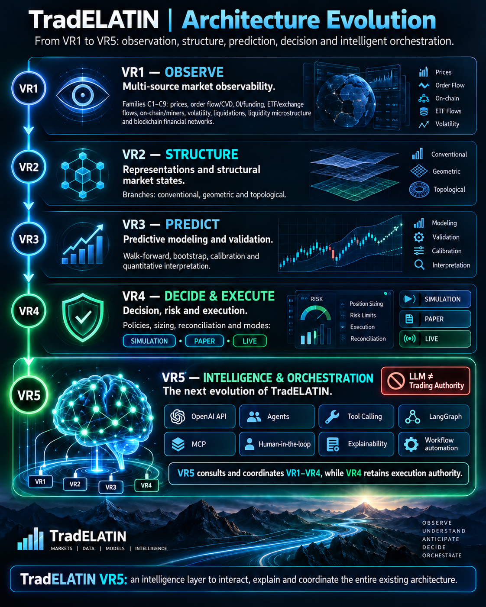

Acquisition
Collects heterogeneous observations from controlled external data endpoints and market-data providers.
TradELATIN separates observation, structural representation, prediction and controlled decision / execution through versioned contracts and validation. VR5 adds transversal intelligence and orchestration; VR4 retains execution authority.
VR1 observes. VR2 structures. VR3 predicts. VR4 decides and executes under explicit controls. VR5 interacts, explains and orchestrates.
Functional pipeline: VR1 → VR2 → VR3 → VR4
VR5 interacts with every layer. Execution authorization and execution-state transitions remain in VR4.

The implemented VR1 system follows a three-layer flow. Each layer has a distinct responsibility and communicates through structured interfaces.
Collects heterogeneous observations from controlled external data endpoints and market-data providers.
Validates, normalizes, and transforms observations into structured information suitable for downstream use.
Presents structured observations through interactive, human-facing views without adding predictive or execution claims.
VR1 observes markets. It does not predict prices, generate trading signals, or execute trades.
These capabilities connect and support the three VR1 layers without collapsing their responsibilities.
Explicit interfaces make exchanges between layers stable, inspectable, and reproducible.
Acquisition paths are implemented but require external provider credentials and applicable data access.
Supports deterministic development and testing without relying on live providers.
Applies repeatable checks to payloads, contracts, and processing boundaries.
Verifies that components compose into a controlled end-to-end observation system.
TradELATIN VR1 organizes heterogeneous financial observations into nine bounded families. C1–C8 form the implemented foundation, validated primarily through emulator, synthetic, and replay workflows, while C9 extends the architecture toward blockchain-native financial networks through independently developed ecosystem adapters.
Price behavior, returns, trends, technical transformations, and market-cap observations.
Spot and derivatives volume delta, aggressor behavior, order flow, and divergence observations.
Open interest, funding conditions, leverage context, and derivatives positioning.
ETF activity, exchange inflows and outflows, accumulation, and distribution behavior.
Miner reserves, SOPR, hashrate, difficulty, selling pressure, and blockchain activity relevant to market observation.
Realized volatility, historical volatility, ATR, distribution shape, and volatility-regime observations.
Long and short liquidations, leverage maps, concentration clusters, and positioning context.
Order-book depth, spread, imbalance, whale-order persistence, large trades, and market-impact observations.
A network-agnostic framework for converting blockchain-native financial activity into normalized observables.
C1–C8 have implemented pipelines validated primarily through emulator, synthetic, and replay workflows. Live acquisition requires provider access. C9 follows an independent path for common architecture and ecosystem-specific adapters; it is not presented as operational.
The families are analytically distinct but interoperable. Each family preserves its own inputs, transformations, contracts, validation rules, and representations before participating in cross-family state characterization.
Adapter labels describe maturity and conceptual separation. They do not claim an operational integration.
C9 is one family within VR1, not the definition of VR1 as a whole.
C9 does not replace C1–C8. It extends the observational system with blockchain-native financial data.
The base functional pipeline remains VR1 → VR2 → VR3 → VR4. VR5 can query and coordinate each of those layers. Maturity remains specific to a branch, component and release; architecture diagrams do not establish production readiness.
Produces structured, synchronized, and reproducible financial observations.
Produces structural states in the CONVENTIONAL branch. GEOMETRIC and TOPOLOGICAL remain research / expansion.
Organizes deterministic predictive components, temporal validation, uncertainty, calibration and versioned outputs.
Owns decisions, risk controls, authorization, order lifecycle and reconciliation across SIMULATION, PAPER and gated LIVE modes.
Queries, explains and coordinates across VR1–VR4; execution authority remains in VR4.
Explore VR5 →These boundaries apply to the four-layer functional pipeline. VR5 coordinates across the layers; no diagram implies equal maturity or automatic execution authorization.
VR1 uses Screen, Processing, Connection / Emulator and Integration. VR2–VR4 use Screen, Processing and Integration; fixtures, replay and test datasets belong within Processing / Integration. VR5 is an intelligence and orchestration layer in development.
Human-facing representation and interaction.
Domain-specific transformation and analysis.
Independent acquisition and repeatable synthetic / replay inputs for VR1 development and validation.
Controlled composition across components and boundaries.
Implemented / validated engineering, research / expansion, component architecture, development and future capability remain distinct.
Implemented observational pipelines, validated primarily through emulator, synthetic, and replay workflows. Live acquisition requires provider access.
Blockchain Financial Networks.
CONVENTIONAL implementation scope; GEOMETRIC and TOPOLOGICAL remain research / expansion.
Deterministic predictive components and validation responsibilities; release-specific evidence is distinct from production readiness.
Decision and execution authority with SIMULATION, PAPER and gated LIVE; no real-capital deployment claimed.
Intelligence and orchestration; target agent and workflow capabilities are not claimed as implemented.